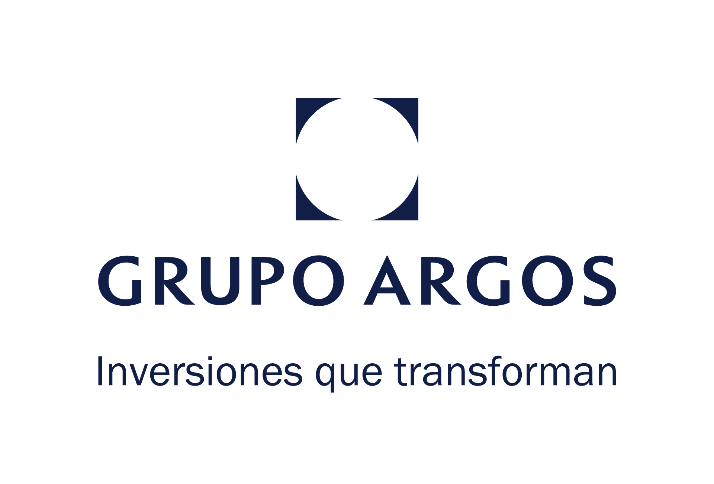
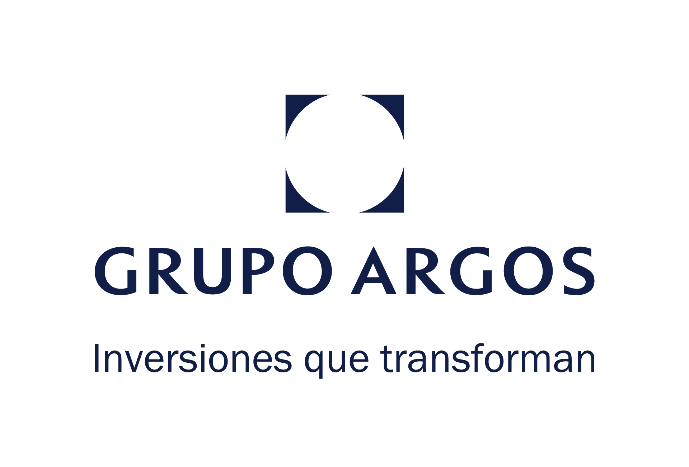

En esta sesión de la catedra se abordaron varios temas fundamentales sobre la sostenibilidad, problematica del uso del suelo y el programa de la asignatura. Se discutió el estado actual de los acontecimientos relacionados con el cambio climático, los riesgos a los que nos enfrentamos como sociedad y los distintos tipos de riesgos que se presentan. Además, se analizaron los riesgos a nivel mundial, profundizando en su impacto y las posibles medidas para hacerles frente.
CATEDRA NACIONAL DE SOSTENIBILIDAD Y CAMBIO CLIMATICO
 
